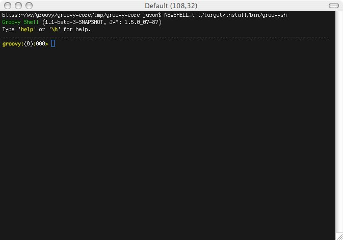
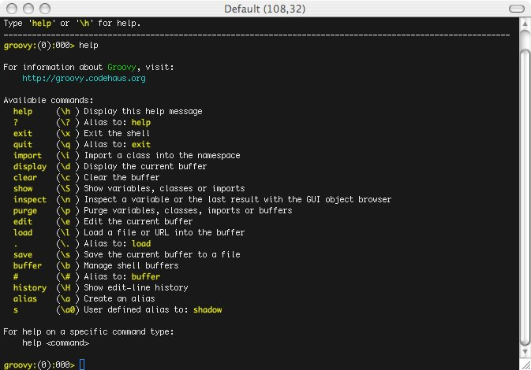
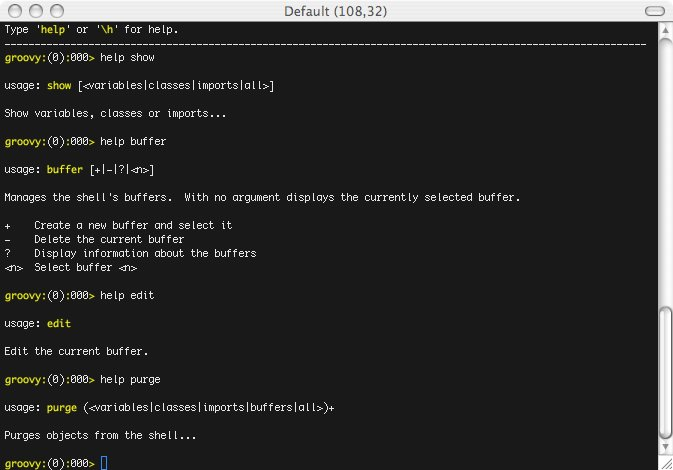
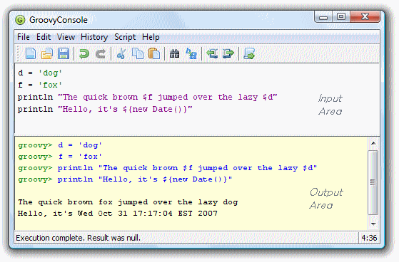
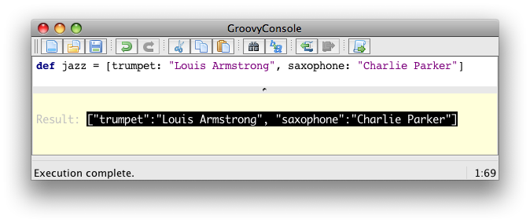
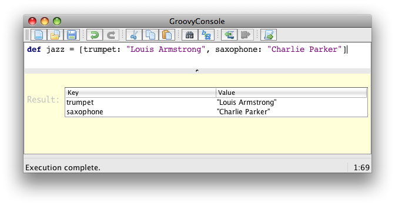
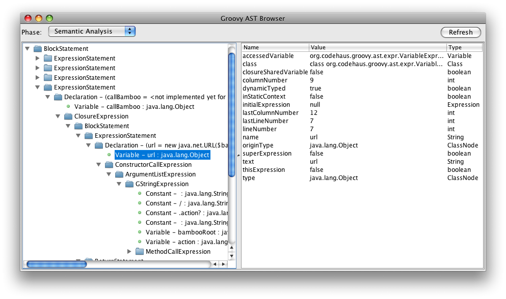

3. groovysh, the Groovy shell
3.1. Groovy : Groovy Shell
The Groovy Shell, aka. groovysh is a command-line application which
allows easy access to evaluate Groovy expressions, define classes and
run simple experiments.
3.1.1. Features
-
No need for
gocommand to execute buffer. -
Rich cross-platform edit-line editing, history and completion thanks to JLine.
-
ANSI colors (prompt, exception traces, etc).
-
Simple, yet robust, command system with online help, user alias support and more.
-
User profile support
3.1.2. Command-line Options and Arguments
The shell supports several options to control verbosity, ANSI coloring and other features.
./bin/groovysh --help
usage: groovysh [options] [...]
-C, --color[=FLAG] Enable or disable use of ANSI colors
-D, --define=NAME=VALUE Define a system property
-T, --terminal=TYPE Specify the terminal TYPE to use
-V, --version Display the version
-d, --debug Enable debug output
-h, --help Display this help message
-q, --quiet Suppress superfluous output
-v, --verbose Enable verbose outputIn addition to options, commands or expressions can be given on the command-line which will invoke the shell in non-interactive mode. The commands or expressions will be evaluated and the shell will exit. If no additional arguments are given the shell will startup interactively.
Execute a Command
./bin/groovysh 'show preferences' No preferences are set
Evaluate an Expression
./bin/groovysh 'System.properties.each { k, v -> println("$k = $v") }'
java.runtime.name = Java(TM) 2 Runtime Environment, Standard Edition
sun.boot.library.path = /System/Library/Frameworks/JavaVM.framework/Versions/1.5.0/Libraries
java.vm.version = 1.5.0_07-87
awt.nativeDoubleBuffering = true
gopherProxySet = false
...
3.1.3. Evaluating Expressions
Simple Expressions
println "Hello"Evaluation Result
When a complete expression is found, it is compiled and evaluated. The result of the evaluation is stored into the _ variable.
Multi-line Expressions
Multi-line/complex expressions (like closure or class definitions) may be defined over several lines. When the shell detects that it has a complete expression it will compile and evaluate it.
Define a Class
class Foo {
def bar() {
println "baz"
}
}Use the Class
foo = new Foo()
foo.bar()Variables
Shell variables are all untyped (ie. no def or other type
information).
This will set a shell variable:
foo = "bar"But, this will evaluate a local variable and will not be saved to the shell’s environment:
def foo = "bar"Functions
Functions can be defined in the shell, and will be saved for later use.
Defining a function is easy:
groovy:000> def hello(name) {
groovy:001> println("Hello $name")
groovy:002> }And then using it is as one might expect:
hello("Jason")Internally the shell creates a closure to encapsulate the function and then binds the closure to a variable. So variables and functions share the same namespace.
3.1.4. Commands
The shell has a number of different commands, which provide rich access to the shell’s environment.
Commands all have a name and a shortcut (which is something like
\h). Commands may also have some predefined system aliases. Users
may also create their own aliases.
Recognized Commands
help
Display the list of commands (and aliases) or the help text for specific command.
The Command List
groovy:000> help
For information about Groovy, visit:
http://groovy.codehaus.org
Available commands:
help (\h ) Display this help message
? (\? ) Alias to: help
exit (\x ) Exit the shell
quit (\q ) Alias to: exit
import (\i ) Import a class into the namespace
display (\d ) Display the current buffer
clear (\c ) Clear the buffer and reset the prompt counter.
show (\S ) Show variables, classes or imports
inspect (\n ) Inspect a variable or the last result with the GUI object browser
purge (\p ) Purge variables, classes, imports or preferences
edit (\e ) Edit the current buffer
load (\l ) Load a file or URL into the buffer
. (\. ) Alias to: load
save (\s ) Save the current buffer to a file
record (\r ) Record the current session to a file
history (\H ) Display, manage and recall edit-line history
alias (\a ) Create an alias
set (\= ) Set (or list) preferences
register (\rc) Registers a new command with the shell
doc (\D ) Opens a browser window displaying the doc for the argument
For help on a specific command type:
help <command>
Help for a Command
While in the interactive shell, you can ask for help for any command to
get more details about its syntax or function. Here is an example of
what happens when you ask for help for the help command:
groovy:000> help help usage: help [<command>] Display the list of commands or the help text for <command>.
exit
Exit the shell.
This is the only way to exit the shell. Well, you can still CTRL-C,
but the shell will complain about an abnormal shutdown of the JVM.
import
Add a custom import which will be included for all shell evaluations.
This command can be given at any time to add new imports.
display
Display the contents of the current buffer.
This only displays the buffer of an incomplete expression. Once the expression is complete, the buffer is rest. The prompt will update to show the size of the current buffer as well.
Example
groovy:000> class Foo {
groovy:001> def bar
groovy:002> def baz() {
groovy:003> display
001> class Foo {
002> def bar
003> def baz() {
clear
Clears the current buffer, resetting the prompt counter to 000. Can be used to recover from compilation errors.
show
Show variables, classes or preferences or imports.
show variables
groovy:000> show variables Variables: _ = true
show classes
show imports
show preferences
show all
inspect
Opens the GUI object browser to inspect a variable or the result of the last evaluation.
purge
Purges objects from the shell.
purge variables
purge classes
purge imports
purge preferences
purge all
edit
Edit the current buffer in an external editor.
Currently only works on UNIX systems which have the EDITOR environment
variable set, or have configured the editor preference.
load
Load one or more files (or urls) into the buffer.
save
Saves the buffer’s contents to a file.
record
Record the current session to a file.
record start
record stop
record status
history
Display, manage and recall edit-line history.
history show
history recall
history flush
history clear
alias
Create an alias.
doc
Opens a browser with documentation for the provided class. For example:
doc java.net.URL
will open two windows (or tabs, depending on your browser):
-
one for the JDK documentation
-
one for the GDK documentation
set
Set or list preferences.
3.1.5. Preferences
Some of aspects of groovysh behaviors can be customized by setting
preferences. Preferences are set using the set command or the \=
shortcut.
Recognized Preferences
verbosity
Set the shell’s verbosity level. Expected to be one of:
-
DEBUG -
VERBOSE -
INFO -
QUIET
Default is INFO.
If this preference is set to an invalid value, then the previous setting will be used, or if there is none, then the preference is removed and the default is used.
show-last-result
Show the last result after an execution.
Default is true.
sanitize-stack-trace
Sanitize (trim-down/filter) stack traces.
Default is true.
editor
Configures the editor used by the edit command.
Default is the value of the system environment variable EDITOR.
Mac OS XTo use TextEdit, the default text editor on Mac OS X, configure: set editor /Applications/TextEdit.app/Contents/MacOS/TextEdit
Setting a Preference
set verbosity DEBUG
Listing Preferences
To list the current set preferences (and their values):
show preferences
LimitationAt the moment, there is no way to list all of the known/available preferences to be set.
Clearing Preferences (ie. Resetting to Defaults)
purge preferences
3.1.6. User Profile Scripts and State
Profile Scripts
$HOME/.groovy/groovysh.profile
This script, if it exists, is loaded when the shell starts up.
$HOME/.groovy/groovysh.rc
This script, if it exists, is loaded when the shell enters interactive mode.
State
$HOME/.groovy/groovysh.history
Edit-line history is stored in this file.
3.1.7. Custom commands
The register command allows you to register custom commands in the shell. For example, writing the following
will register the Stats command:
register Stats
where the Stats class is a class extending the org.codehaus.groovy.tools.shell.CommandSupport class. For example:
import org.codehaus.groovy.tools.shell.CommandSupport
import org.codehaus.groovy.tools.shell.Groovysh
class Stats extends CommandSupport {
protected Stats(final Groovysh shell) {
super(shell, 'stats', 'T')
}
public Object execute(List args) {
println "Free memory: ${Runtime.runtime.freeMemory()}"
}
}Then the command can be called using:
groovy:000> stats stats Free memory: 139474880 groovy:000>
Note that the command class must be found on classpath: you cannot define a new command from within the shell.
3.1.8. Screen Shots
These shots have been taken over the development of the new shell, so some of the content might look slightly different. Also, note the yellow colors here are the shell’s bold color, so the colors might look different depending on how the enclosing shell has its colors setup.



3.1.9. Troubleshooting
Please report any problems you
run into. Please be sure to mark the JIRA issue with the Groovysh
component.
Platform Problems
Problems loading the JLine DLL
On Windows, JLine (which is used for the fancy
shell input/history/completion fluff), uses a tiny DLL file to trick
the evil Windows faux-shell (CMD.EXE or COMMAND.COM) into
providing Java with unbuffered input. In some rare cases, this might
fail to load or initialize.
One solution is to disable the frills and use the unsupported terminal
instance. You can do that on the command-line using the --terminal
flag and set it to one of:
-
none -
false -
off -
jline.UnsupportedTerminal
groovysh --terminal=none
Problems with Cygwin on Windows
as Some people have issues when running groovysh with cygwin. If you have troubles, the following may help:
stty -icanon min 1 -echo groovysh --terminal=unix stty icanon echo
3.2. groovyConsole, the Groovy swing console
3.2.1. Groovy : Groovy Console
The Groovy Swing Console allows a user to enter and run Groovy scripts. This page documents the features of this user interface.
3.2.2. Basics

-
Groovy Console is launched via
groovyConsoleorgroovyConsole.bat, both located in$GROOVY_HOME/bin -
The Console has an input area and an output area.
-
You type a Groovy script in the input area.
-
When you select
Runfrom theActionsmenu, the console compiles the script and runs it. -
Anything that would normally be printed on
System.outis printed in the output area. -
If the script returns a non-null result, that result is printed.
3.2.3. Features
Running Scripts
There are several shortcuts that you can use to run scripts or code snippets:
-
Ctrl+EnterandCtrl+Rare both shortcut keys forRun Script. -
If you highight just part of the text in the input area, then Groovy runs just that text.
-
The result of a script is the the value of the last expression executed.
-
You can turn the System.out capture on and off by selecting
Capture System.outfrom theActionsmenu
Editing Files
You can open any text file, edit it, run it (as a Groovy Script) and then save it again when you are finished.
-
Select
File > Open(shortcut keyctrl+O) to open a file -
Select
File > Save(shortcut keyctrl+S) to save a file -
Select
File > New File(shortcut keyctrl+Q) to start again with a blank input area
History and results
-
You can pop-up a gui inspector on the last (non-null) result by selecting
Inspect Lastfrom theActionsmenu. The inspector is a convenient way to view lists and maps. -
The console remembers the last ten script runs. You can scroll back and forth through the history by selecting
NextandPreviousfrom theEditmenu.Ctrl-Nandctrl-Pare convenient shortcut keys. -
The last (non-null) result is bound to a variable named
_(an underscore). -
The last result (null and non-null) for every run in the history is bound into a list variable named
__(two underscores). The result of the last run is__[-1], the result of the second to last run is__[-2]and so forth.
Interrupting a script
The Groovy console is a very handy tool to develop scripts. Often, you will
find yourself running a script multiple times until it works the way you want
it to. However, what if your code takes too long to finish or worse, creates
an infinite loop? Interrupting script execution can be acheived by clicking
the interrupt button on the small dialog box that pops up when a script
is executing or through the interrupt icon in the tool bar.

However, this may not be sufficient to interrupt a script: clicking the button
will interrupt the execution thread, but if your code doesn’t handle the interrupt
flag, the script is likely to keep running without you being able to effectively
stop it. To avoid that, you have to make sure that the Script > Allow interruption
menu item is flagged. This will automatically apply an AST transformation to your
script which will take care of checking the interrupt flag (@ThreadInterrupt).
This way, you guarantee that the script can be interrupted even if you don’t explicitly
handle interruption, at the cost of extra execution time.
And more
-
You can change the font size by selecting
Smaller FontorLarger Fontfrom theActions menu -
The console can be run as an Applet thanks to
groovy.ui.ConsoleApplet -
Code is auto indented when you hit return
-
You can drag’n drop a Groovy script over the text area to open a file
-
You can modify the classpath with which the script in the console is being run by adding a new JAR or a directory to the classpath from the
Scriptmenu -
Error hyperlinking from the output area when a compilation error is expected or when an exception is thrown
3.2.4. Embedding the Console
To embed a Swing console in your application, simply create the Console
object,
load some variables, and then launch it. The console can be embedded in
either Java or Groovy code.
The Java code for this is:
import groovy.ui.Console;
...
Console console = new Console();
console.setVariable("var1", getValueOfVar1());
console.setVariable("var2", getValueOfVar2());
console.run();
...Once the console is launched, you can use the variable values in Groovy code.
An example of how to embed either the GroovyConsole or GroovyShell in a Spring Web application can be found at Embedding a Groovy Console in a Java Server Application
3.2.5. Visualizing script output results
You can customize the way script output results are visualized. Let’s see how we can customize this. For example, viewing a map result would show something like this:

What you see here is the usual textual representation of a Map. But,
what if we enabled custom visualization of certain results? The Swing
console allows you to do just that. First of all, you have to ensure
that the visualization option is ticked: View -> Visualize Script
Results — for the record, all settings of the Groovy Console are stored
and remembered thanks to the Preference API. There are a few result
visualizations built-in: if the script returns a java.awt.Image, a
javax.swing.Icon, or a java.awt.Component with no parent, the object is
displayed instead of its toString() representation. Otherwise,
everything else is still just represented as text. Now, create the
following Groovy script in ~/.groovy/OutputTransforms.groovy:
import javax.swing.*
transforms << { result ->
if (result instanceof Map) {
def table = new JTable(
result.collect{ k, v ->
[k, v?.inspect()] as Object[]
} as Object[][],
['Key', 'Value'] as Object[])
table.preferredViewportSize = table.preferredSize
return new JScrollPane(table)
}
}The Groovy Swing console will execute that script on startup, injecting a transforms list in the binding of the script, so that you can add your own script results representations. In our case, we transform the Map into a nice-looking Swing JTable. And we’re now able to visualize maps in a friendly and attractive fashion, as the screenshot below shows:

3.2.6. AST browser
Groovy Console can visualize the AST (Abstract Syntax Tree) representing the currently edited script, as shown by the screenshot below. This is particularly handy when you want to develop AST transformations.

3.3. groovydoc, the Groovy & Java documentation generator
GroovyDoc is a tool responsible for generating documentation from your code. It acts like the Javadoc tool in the
Java world but is capable of handling both groovy and java files. The distribution comes with two ways of generating
documentation: from command line or from Apache Ant. Other build tools
like Maven or Gradle also offer wrappers for Groovydoc.
3.3.1. The groovydoc command line tool
The groovydoc command line can be invoked to generate groovydocs:
groovydoc [options] [packagenames] [sourcefiles]
where options must be picked from the following table:
| Short version | Long version | Description |
|---|---|---|
-windowtitle <text> |
Browser window title for the documentation |
|
-author |
Include @author paragraphs (currently not used) |
|
-charset <charset> |
Charset for cross-platform viewing of generated documentation |
|
-classpath, -cp |
--classpath |
Specify where to find the class files - must be first argument |
-d |
--destdir <dir> |
Destination directory for output files |
--debug |
Enable debug output |
|
-doctitle <html> |
Include title for the overview page |
|
-exclude <pkglist> |
Specify a list of packages to exclude (separated by colons for all operating systems) |
|
-fileEncoding <charset> |
Charset for generated documentation files |
|
-footer <html> |
Include footer text for each page |
|
-header <html> |
Include header text for each page |
|
-help |
--help |
Display help message |
-nomainforscripts |
Don’t include the implicit public static void main method for scripts |
|
-noscripts |
Don’t process Groovy Scripts |
|
-overview <file> |
Read overview documentation from HTML file |
|
-package |
Show package/protected/public classes and members |
|
-private |
Show all classes and members |
|
-protected |
Show protected/public classes and members (default) |
|
-public |
Show only public classes and members |
|
-quiet |
Suppress superfluous output |
|
-sourcepath <pathlist> |
Specify where to find source files (dirs separated by platform path separator) |
|
-stylesheetfile <path> |
File to change style of the generated documentation |
|
-verbose |
Enable verbose output |
|
--version |
Display the version |
3.3.2. The groovydoc Ant task
The groovydoc Ant task allows generating groovydocs from an Ant build.
Required taskdef
Assuming groovy-all-2.3.6.jar is in my.classpath you will need to
declare this task at some point in the build.xml prior to the groovydoc
task being invoked.
<taskdef name = "groovydoc"
classname = "org.codehaus.groovy.ant.Groovydoc"
classpathref = "my.classpath"/><groovydoc> Attributes
| Attribute | Description | Required |
|---|---|---|
private |
Show all classes and members (i.e. including private ones) if set to “true”. |
No |
destdir |
Location to store the class files. |
Yes |
sourcepath |
The sourcepath to use. |
No |
packagenames |
Comma separated list of package files (with terminating wildcard). |
No |
use |
Create class and package usage pages. |
No |
windowtitle |
Browser window title for the documentation (text). |
No |
doctitle |
Include title for the package index(first) page (html-code). |
No |
header |
Include header text for each page (html-code). |
No |
footer |
Include footer text for each page (html-code). |
No |
overview |
Read overview documentation from HTML file. |
No |
<groovydoc> Nested Elements
link
Create link to groovydoc/javadoc output at the given URL.
| Attribute | Description | Required |
|---|---|---|
href |
Base URL of external site |
Yes |
packages |
Comma separated list of package prefixes |
Yes |
Example #1 - <groovydoc> Ant task
<taskdef name = "groovydoc"
classname = "org.codehaus.groovy.ant.Groovydoc"
classpathref = "path_to_groovy_all"/>
<groovydoc destdir = "${docsDirectory}/gapi"
sourcepath = "${mainSourceDirectory}"
packagenames = "**.*"
use = "true"
windowtitle = "${title}"
doctitle = "${title}"
header = "${title}"
footer = "${docFooter}"
overview = "src/main/overview.html"
private = "false">
<link packages="java.,org.xml.,javax.,org.xml." href="http://download.oracle.com/javase/6/docs/api"/>
<link packages="org.apache.tools.ant." href="http://evgeny-goldin.org/javadoc/ant/api"/>
<link packages="org.junit.,junit.framework." href="http://kentbeck.github.com/junit/javadoc/latest"/>
<link packages="groovy.,org.codehaus.groovy." href="http://groovy.codehaus.org/api/"/>
<link packages="org.codehaus.gmaven." href="http://evgeny-goldin.org/javadoc/gmaven"/>
</groovydoc>Example #2 - Executing <groovydoc> from Groovy
def ant = new AntBuilder()
ant.taskdef(name: "groovydoc", classname: "org.codehaus.groovy.ant.Groovydoc")
ant.groovydoc(
destdir : "${docsDirectory}/gapi",
sourcepath : "${mainSourceDirectory}",
packagenames : "**.*",
use : "true",
windowtitle : "${title}",
doctitle : "${title}",
header : "${title}",
footer : "${docFooter}",
overview : "src/main/overview.html",
private : "false") {
link(packages:"java.,org.xml.,javax.,org.xml.",href:"http://download.oracle.com/javase/6/docs/api")
link(packages:"groovy.,org.codehaus.groovy.", href:"http://groovy.codehaus.org/api")
link(packages:"org.apache.tools.ant.", href:"http://evgeny-goldin.org/javadoc/ant/api")
link(packages:"org.junit.,junit.framework.", href:"http://kentbeck.github.com/junit/javadoc/latest")
link(packages:"org.codehaus.gmaven.", href:"http://evgeny-goldin.org/javadoc/gmaven")
}Custom templates
The groovydoc Ant task supports custom templates, but it requires two steps:
-
A custom groovydoc class
-
A new groovydoc task definition
Custom Groovydoc class
The first step requires you to extend the Groovydoc class, like in the following example:
package org.codehaus.groovy.tools.groovydoc;
import org.codehaus.groovy.ant.Groovydoc;
/**
* Overrides GroovyDoc's default class template - for testing purpose only.
*
* @author Andre Steingress
*/
public class CustomGroovyDoc extends Groovydoc {
@Override
protected String[] getClassTemplates() {
return new String[]{"org/codehaus/groovy/tools/groovydoc/testfiles/classDocName.html"};
}
}You can override the following methods:
-
getClassTemplatesfor class-level templates -
getPackageTemplatesfor package-level templates -
getDocTemplatesfor top-level templates
You can find the list of default templates in the org.codehaus.groovy.tools.groovydoc.gstringTemplates.GroovyDocTemplateInfo
class.
Using the custom groovydoc task
Once you’ve written the class, using it is just a matter of redefining the groovydoc task:
<taskdef name = "groovydoc"
classname = "org.codehaus.groovy.ant.CustomGroovyDoc"
classpathref = "path_to_groovy_all"/>Please note that template customization is provided as is. APIs are subject to change, so you must consider this as a fragile feature.
3.4. IDE integration
The Groovy language is supported by lots of IDEs and text editors.
| Editor | Support level | Syntax highlighting | Code completion | Refactoring |
|---|---|---|---|---|
Yes |
Text based |
No |
||
|
Yes |
Yes |
Yes |
|
|
Yes |
Yes |
Yes |
|
|
Yes |
Yes |
Yes |
|
|
Yes |
Yes |
Yes |
|
|
Yes |
Brackets |
No |
|
|
Yes |
Snippets |
No |
|
Yes |
No |
No |